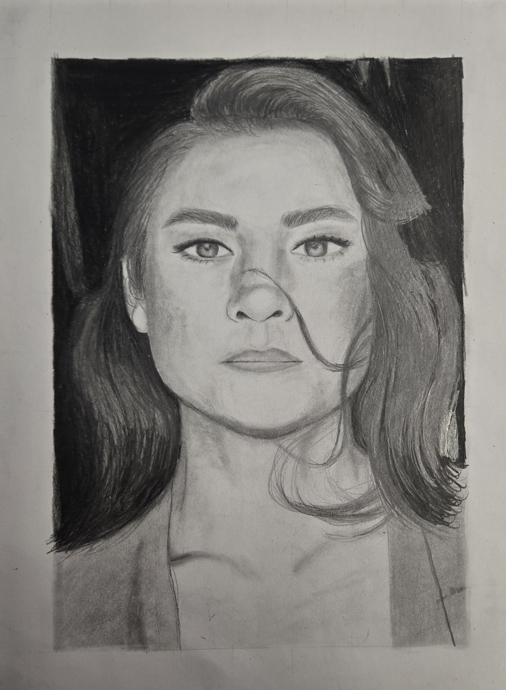
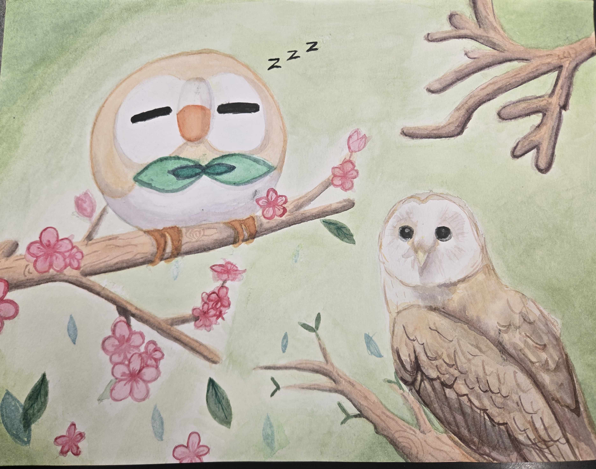
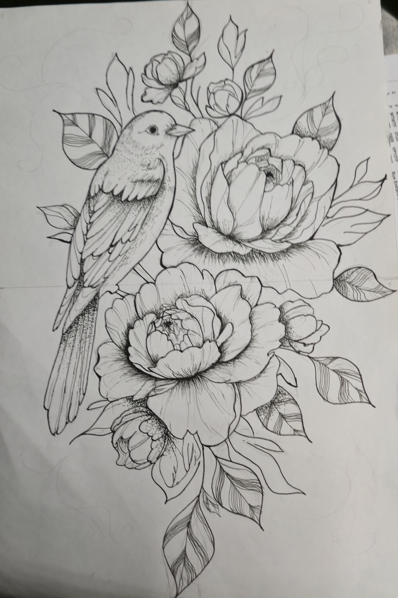

.png)
Here are some of the projects I've worked on!
Projects
Project 1:
This was for my Spanish science class where we had to make a pamphlet about the central costa and its ecosystem.
Project 2:
This project we did about first World War and the diversity there was during the WW1.
Project 3:
In my chemistry class, we selected an element from the periodic table and had to do research on our element. After doing research on what copper does and where we can find it, we then needed to upload
Project 4:
In my business clas, we needed to create and pitch a brand new business idea to the class. We then had the opportunity to participate in our schools Market Day in December.
Project 5:
This project we were tasked to create the game pong and made sure it ran properly. We had to design the game menu and ensure each button presented on the screen worked.
Project 6:
This project we did for was for my Pre-Calc class were we created a rollercoster and then found the used math to fine the best fit line.
Project 7:

This project was done in my art class, were we neede to draw our favorite music artist. We used different types of graphite pencils to achive different types of shades.
Project 8:

This is my lastest project I done in art. It's a watercolor piece inspired by surrealism with my favorite pokemon character, Rowlet, intercating with a real-world owl.
Project 9:

This project was my first big art piece we did in my Spanish art class. We needed to draw a bigger version of a reference sheet and the outline it with marker.
Project 10:
This project was done in my AP English Lit class. We were tasked in researching authors that we could reference in our AP final exam.